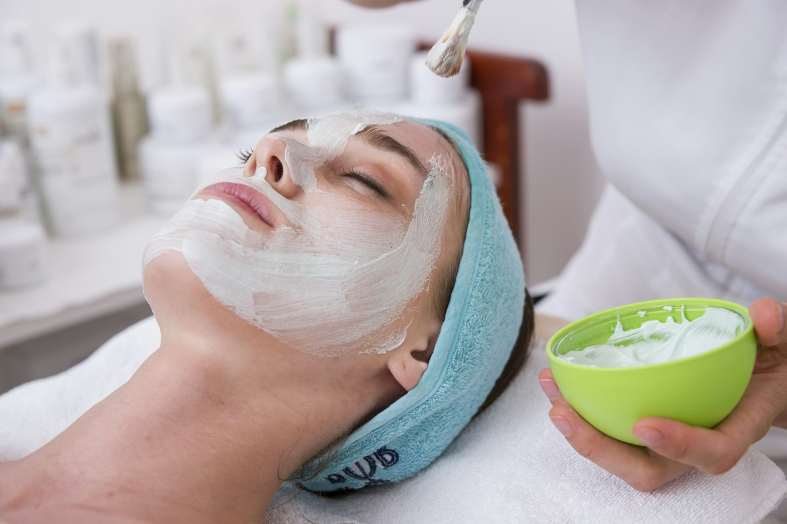
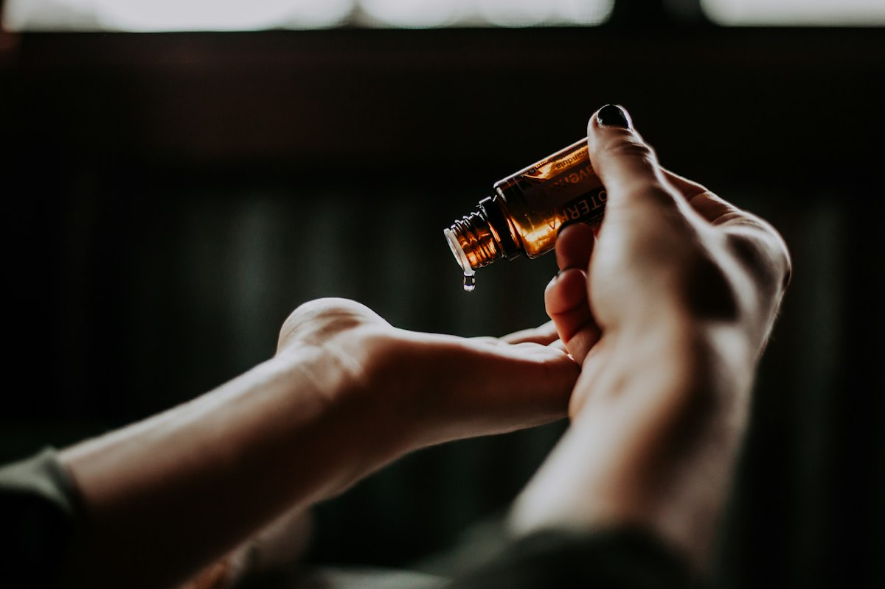
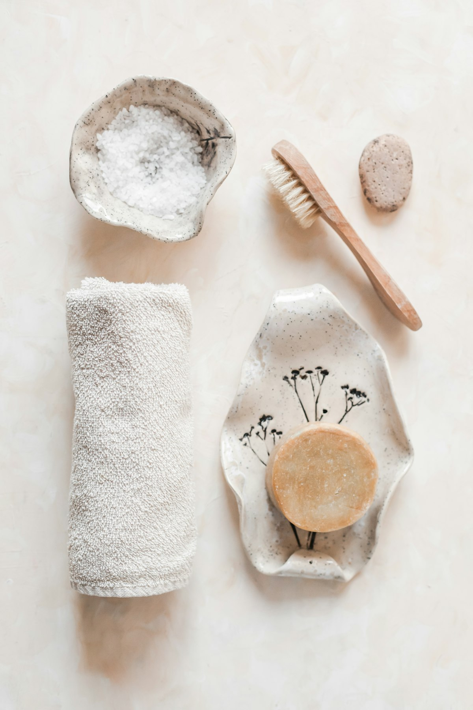

Facial Wajah
Pembersihan mendalam, komedo dan sel kulit mati beres — wajah langsung terasa lega dan segar.
Mulai Rp 45.000Klinik Perawatan Kulit — Cipeundeuy, Subang
Facial, treatment jerawat, sampai perawatan glowing — semua dikerjakan telaten, higienis, dan dengan harga yang bersahabat. Buka setiap hari pukul 09.00–22.00 WIB.

Treatment Kami
Semua treatment didahului pemeriksaan singkat kondisi kulit, supaya perawatannya tepat sasaran — bukan sekadar ikut-ikutan.
Pembersihan mendalam, komedo dan sel kulit mati beres — wajah langsung terasa lega dan segar.
Mulai Rp 45.000Perawatan jerawat aktif dan bekasnya dengan teknik lembut — tanpa menambah iritasi.
Mulai Rp 75.000Bantu meratakan warna kulit dan menghadirkan efek glowing yang sehat, bukan putup tiada sebab.
Mulai Rp 85.000Lulur, massage ringan, dan perawatan badan untuk melepas penat setelah hari yang panjang.
Mulai Rp 100.000Perawatan rutin bulanan untuk kulit tetap sehat, halus, dan terawat di sela aktivitas.
Mulai Rp 60.000Bingung mulai dari mana? Ceritakan keluhanmu dulu — kami bantu pilih treatment yang paling cocok.
Tanyakan via WhatsAppHarga dapat berubah menyesuaikan kebutuhan kulit — tanyakan paket terbaikmu lewat WhatsApp.
Tentang Kami
Klinik Nins Skincare adalah klinik perawatan kulit yang berada di Cipeundeuy, Subang. Kami percaya perawatan kulit yang bagus itu bukan soal alat mahal — tapi soal kebersihan, ketelatenan, dan pendampingan yang jujur.
Setiap pelanggan diperlakukan sesuai kondisi kulitnya sendiri. Kalau treatment tertentu tidak perlu, kami akan bilang tidak perlu. Simpel.
Suasana Klinik





Kata Mereka
“Perawatannya bagus… dll, OK!”
“Tempatnya nyaman, terapisnya ramah dan telaten. Jadi betah treatment rutin di sini.”
“Harganya bersahabat tapi hasilnya tidak murahan. Wajah terasa bersih maksimal setelah facial.”
Rating sempurna dari pelanggan yang sudah mencoba treatment di Nins Skincare.
Lihat semua ulasan di GooglePertanyaan Umum
Belum ketemu jawabannya? Tanya langsung lewat WhatsApp, dibalas di jam operasional.
Walk-in tetap kami terima, tapi untuk menghindari antre — apalagi akhir pekan — booking dulu via WhatsApp sangat disarankan.
Umumnya 45–90 menit tergantung treatment yang diambil. Facial biasa sekitar satu jam, treatment gabungan bisa lebih lama.
Setiap treatment didahului pemeriksaan singkat kondisi kulit. Produk dan teknik disesuaikan agar tetap lembut untuk kulit sensitif.
Facial mulai Rp 45.000, treatment jerawat mulai Rp 75.000. Harga final tergantung kondisi kulit — tanyakan dulu lewat WhatsApp, gratis.
Pembayaran bisa tunai maupun QRIS, jadi tidak perlu bawa uang pas.
Kami di area Bakso dan Mie Ayam Garden, Jl. Benang Sari Indah, Cipeundeuy, Subang. Lokasi tepat jalan, mudah dijangkau kendaraan roda dua maupun mobil.
Lokasi & Jam Operasional
| Senin – Kamis | 09.00 – 22.00 |
|---|---|
| Jumat | 09.00 – 22.00 |
| Sabtu – Minggu | 09.00 – 22.00 |
Slot treatment terbatas setiap hari. Amankan jadwalnya sekarang — konsultasinya gratis.